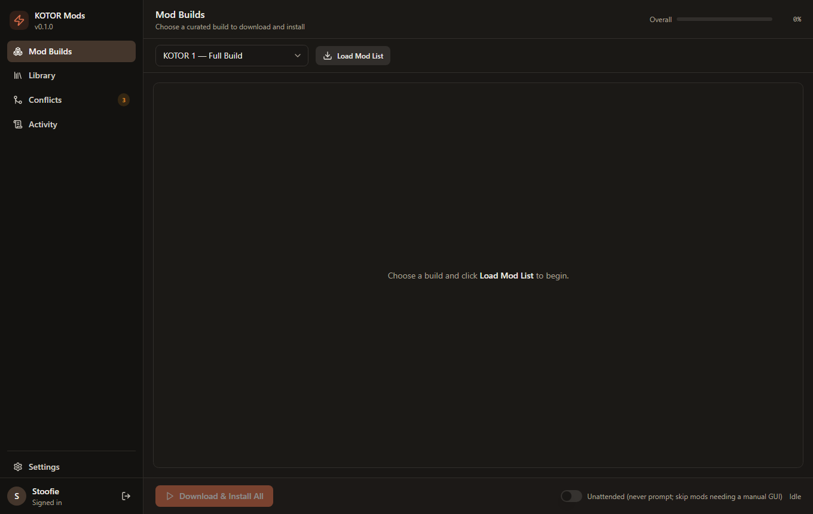
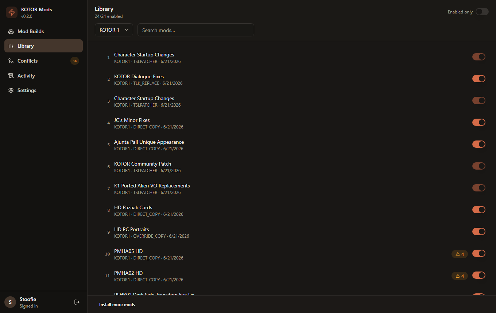
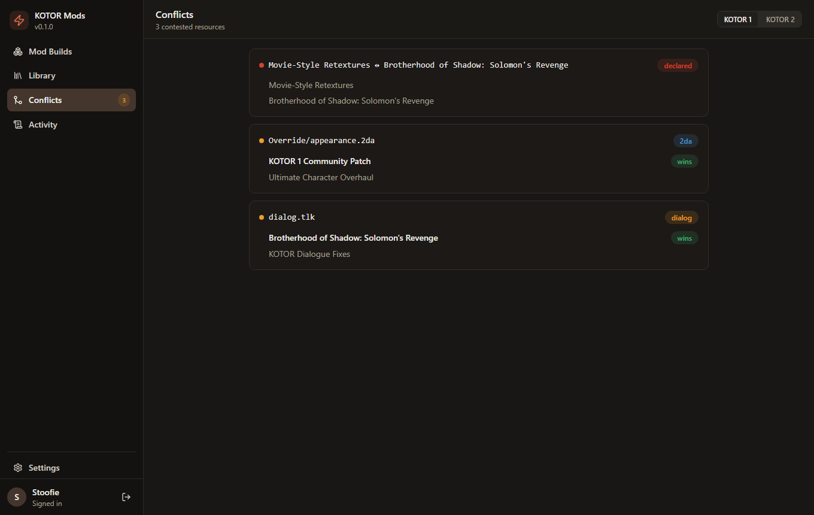
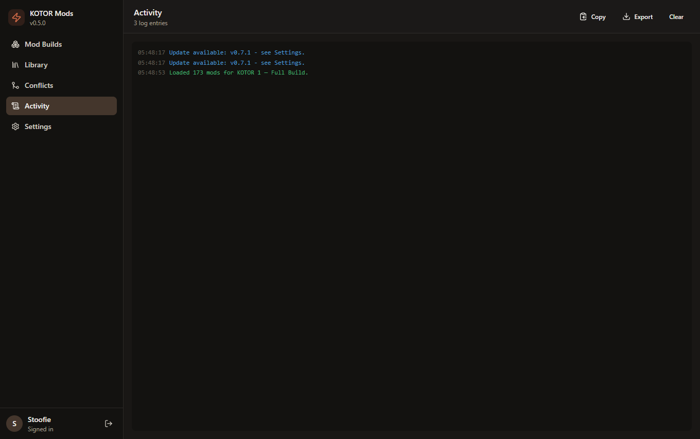
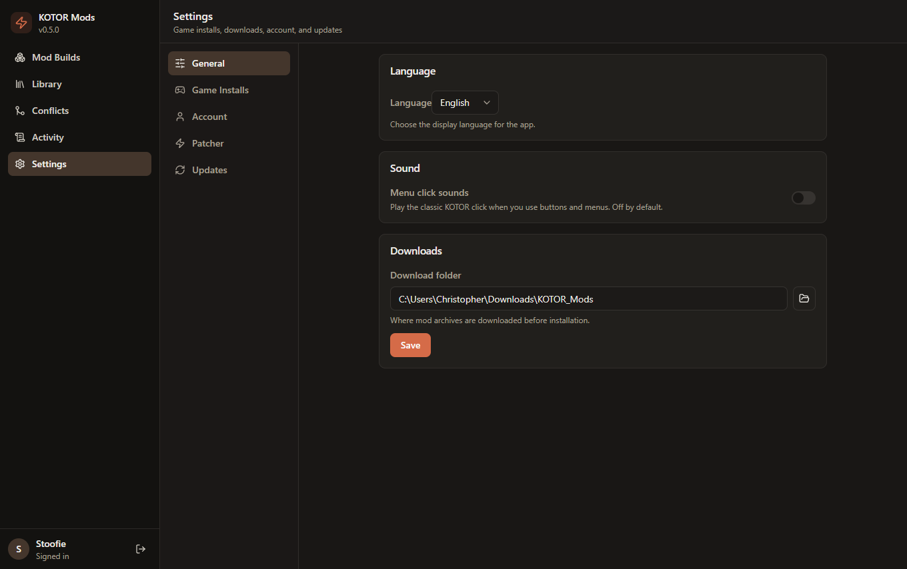
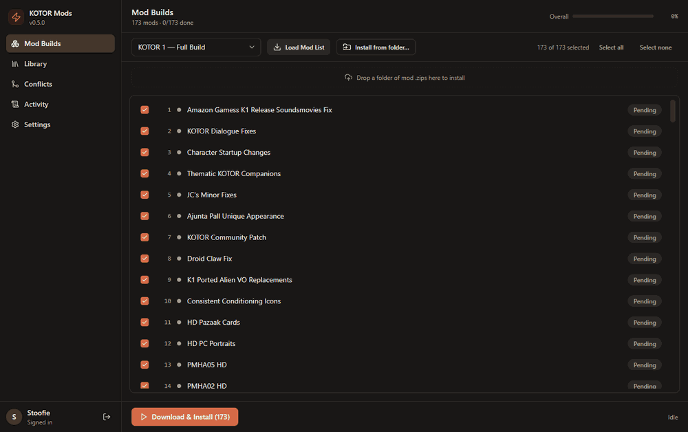
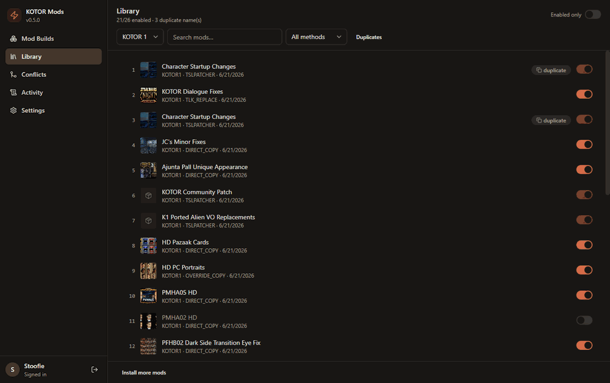

For Knights of the Old Republic I & II
Mod KOTOR without the busywork.
Pick a community build, press one button, and the app downloads and installs every mod in the right order. TSLPatcher mods install on their own. Turn mods on and off whenever you like.

A quiet app
that does the work.
Everything lives in one window with a short sidebar. No setup wizards, no command lines, no clicking through installers one by one.




Four steps to a
modded game.
Most of the time goes into the downloads. You can walk away while it runs.
-
Download and open it
Get KOTOR-Mod-Installer.exe from the latest release and run it. That one file is the whole app.
-
Point it at your game
In Settings, add your KOTOR 1 and KOTOR 2 folders and sign in to DeadlyStream. For builds with Nexus Mods files, add your Nexus API key too. Free Nexus accounts click one download button per mod; Premium is fully automatic.
-
Pick a build and press install
Open Mod Builds, choose a build such as KOTOR 1 Full Build, then Download & Install All. Mods go in one after another in the recommended order, with live progress.
-
Tweak it later
Use the Library to switch mods on or off, or add any other mod archive you have. Conflicts warns you when two mods touch the same files, or when a mod's readme says it doesn't get along with another.


The small things,
handled.
Community builds
Follows the recommended mod list and installs it in the right order.
Hands-free patching
TSLPatcher mods install by themselves. No clicking through each patcher.
On and off
Disable a mod and its files are moved out of the game. Enable it to put them back.
Conflict checks
See which mods overlap or are known not to work together.
Bring your own mods
Add any archive or folder. The app works out how to install it and keeps track.
Stays up to date
Lets you know when a new version is out.
Ready when you are.
The app downloads mods through your own DeadlyStream and Nexus Mods accounts and runs the installers that come with each mod. It includes no mod content itself. TSLPatcher and HoloPatcher belong to their authors.